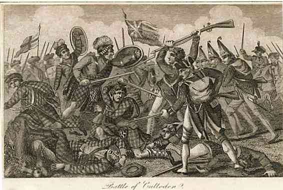
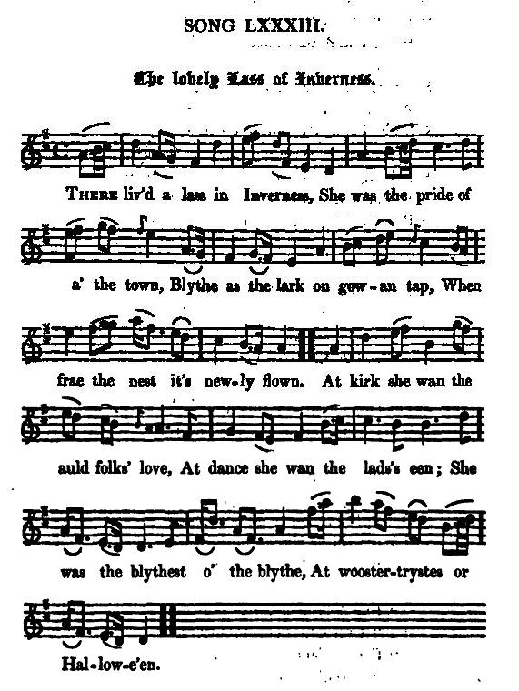
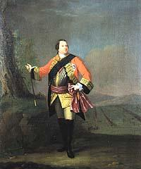

The Lovely Lass Of Inverness
La Jolie fille d'Inverness
Version 1 by Robert Burns
"Scots Musical Museum" Volume V, song 401, page 414, 1796Version 2 by Allan Cunningham
Cromek's "Remains of Nithsdale and Galloway Song", page 180, 1810Hogg's "Jacobite Relics" 2nd Series N°84 (Burns) and 83 (Cunningham), 1821
Tune - Mélodie
"The lovely lass of Inverness"
Contributed by Mr Paul Ernest, sequenced by Ch.Souchon

|
To the tune:
(As stated by Hogg in JR2, page 356), the tune "The lovely lass of Inverness", originally published in 1740, is the composition of James Oswald , and is in the "Caledonian Pocket Companion", 1743. Johnson, of the Scots Musical Museum, originally intended it for a song beginning "Upon the flowery banks of Tweed", but Burns directed his own song for it, and so it was printed.. To the text: The Museum -MS. Lists have a note: 'Mr. Burns's old words' and the MS. is in the British Musenm. All but the opening four lines are by Burns. Burns visited the field of Culloden in 1787, and in his diary of the Highland tour he has recorded his reflections on the final disaster of the Stuarts. Source "Complete songs of R. Burns Online Book" (cf. Links). Hogg wrote to the "First set" of the song (version N°2): "This beautiful song is from Cromek. Who can doubt that it is by Cunningham, or suppose that such a song really remained in Nithsdale unknown to Burns? The music is by Oswald. To the "modern (?) set" (version N°1): "It is by Burns, altered from some old lines". |
A propos de la mélodie:
(Comme l'indique Hogg dans JR2, page 356), la mélodie "La jolie fille d'Inverness", publiée tout d'abord en 1740, est de James Oswald et elle figure dans le "Vadémécum du Calédonien" de 1743. Johnson, l'éditeur du "Musée" la destinait à accompagner un autre chant, "Sur les bords fleuris de la Tweed", mais Burns voulut l'avoir pour sa propre composition et il en fut fait ainsi. A propos du texte: Les Listes des manuscrits du "Musée" signalent: "Paroles originales de M. Burns" et son manuscrit est au British Museum. Tout le poème sauf les 4 premières lignes sont de Burns. Burns visita Culloden en 1787 lors de sa tournée des Highlands et son journal renferme ses réflexions au sujet de cette catastrophe. Source "Complete songs of R. Burns Online Book" (cf. Liens). Hogg ecrivit à propos du chant (version 2): "Ce beau chant se trouve chez Cromek. Qui peut douter qu'il soit de Cunningham. Il est inimaginable qu'un tel chant, s'il était conservé dans le Nithsdale, ait pu échapper à Burns. La musique est d'Oswald. Au sujet du texte "moderne" (?): "de Burns" qui a modifié certains couplets anciens." |

The Lovely Lass of Inverness
from "Scots Musical Museum" Volume V

|
1. The lovely lass o' Inverness,
Nae joy nor pleasure can she see; For, e'en to morn she cries, alas! And aye the saut tear blin's her e'e. 2. "Drumossie moor, Drumossie day- A waefu' day it was to me! For there I lost my father dear, My father dear, and brethren three. 3. "Their winding-sheet the bluidy clay, Their graves are growin' green to see; And by them lies the dearest lad That ever blest a woman's e'e! 4. "Now wae to thee, thou cruel lord, A bluidy man I trow thou be; For mony a heart thou has made sair, That ne'er did wrang to thine or thee!(*)" (*)On several occasions the Prince exhibited undue clemency and in the Highland army military discipline was supplied "by implicit obedience to the will of their chiefs...No symptoms of outrage, no ebullition of violence was discernible in the deportment of the lawless mountaineers." (Sir Henry Stewart in 'Anti-Jacobin Review, vol.xiii'). |
1. La jolie fille d'Inverness,
-Toute allégresse a fui son âme- Se répand en cris de détresse! Les yeux emplis d'amères larmes. 2. "Drumossie, jour et lieu maudits- Fatal à ceux qui m'étaient chers! Où mon père me fut ravi, En même temps que mes trois frères. 3. "La glaise est leur sanglant linceul, Leur tombe la verte prairie; Et à leur côté gît le seul Homme dont la vue m'eût réjouie! 4. "Malheur à toi, cruel seigneur, Qui te montras si sanguinaire; Tu te plus à briser des cœurs Qui, avec les tiens, t'épargnèrent!(*)" (Trad. Ch.Souchon(c)2005) (*)En maintes occasions le Prince fit preuve d'une généreuse clémence et dans l'armée des Highlands, la discipline militaire était suppléée "par une implicite obéissance aux ordres des Chefs de Clans...Aucun signe de brutalité, aucune éruption de violence ne fut jamais notée dans le comportement de ces montagnards en marge des lois." (Sir Henry Stewart dans 'Anti-Jacobin Review, vol.xiii'). |
1. Die holde Maid von Inverness
Kennt keine Freuden früh noch spät, In Weheruf und Tränenguß Der schönen Augen Licht vergeht! 2. So übertäube denn mein Herz, O Schmerzenstagestrommel(1) du! Wo mein geliebter Vater fiel, Drei Brüder gingen ein zur Ruh! 3. Ihr Leichentuch der blut'ge Grund Ihr Grab in wogend grüner Pracht! Dicht ruht dabei der schönste Mann. Dem je ein Mädchenblick gelacht. 4. Dir, harter Ritter, zehnfach weh'! Du brachst manch Herz, du blut'ger Mann, Das harmlos schlägt und nimmer hat Dir noch den Deinen wehgetan. Ludwig van Beethoven (1770-1827) 25 Schottische Lieder mit Begleitung von Pianoforte, Violine und Cello opus 108 n°8 (1) Ein merkwürdiger Irrtum: "Trommel" ist anscheinend die Übersetzung von "drum" im gälischen Ortsnamen "Drumossie", einer anderen Bezeichnung für das Schlachtfeld von Culloden. |
|
On 16th April 1746 the Jacobite Army led by Bonnie Prince Charlie met the English army under the command of the Duke of Cumberland, at Culloden or Drum(m)ossie near Inverness. Exhausted by an abortive night attempt to attack the Hanoverian forces which left them sleepless and foodless, the 6000 men of the Prince's army were routed by Cumberland's army of nearly 9000 men.
A rumour was circulated among the Government forces that "orders were publicly given in the rebel army, the day before the action, that no quarter should be given to (their) troops" (Letter of Hanoverian Major James Wolfe to his brother). It was the pretext for Cumberland's inhumane brutality after the victory. An alleged no-quarter order signed by one of the commanders of the Highland army, George Murray, proved to be a forgery. This allegation was indignantly repudiated by Lords Balmerino and Kilmarnock who definitely cleared Prince Charles and George Murray of this infamous charge on the day of their execution. Nevertheless this lie served to excuse the butcheries and barbarities the victims of which were not only wounded or defenceless soldiers of the dispersed army, but also many women and children. If about 1000 Scots fell on the battlefield, an estimate of over 3000 people were killed during the next 3 months, amply justifying the epiteth "Butcher" attached to Cumberland. |
Le 16 avril 1746 l'armée Jacobite conduite par Bonnie Prince Charlie affronta l'armée anglaise commandée par son cousin, le Duc de Cumberland, à Culloden ou Drum(m)ossie près d'Inverness. Epuisés par une tentative avortée d'attaquer, la nuit précédente, les Hanovriens, privés de sommeil et de nourriture, les 6000 hommes de l'armée du Prince furent mis en déroute par l'armée de Cumberland forte de près de 9000 hommes.
Une rumeur circulait parmi les forces gouvernementales selon laquelle "des ordres avaient été publiquement donnés la veille de l'engagement à l'armée rebelle de ne pas faire de quartiers avec l'adversaire" (Lettre du Commandant Hanovrien James Wolfe à son frère). Ce fut le prétexte invoqué pour justifier l'inhumaine brutalité de Cumberland après sa victoire. Une soi-disant consigne émanant de l'un des commandants en chef de l'armée des Highlands, George Murray se révéla être un faux et cette allégation fur rejetée avec indignation par Lords Balmerino et Kilmarnock qui lavèrent définitivement le Prince Charles et George Murray de cette accusation infamante le jour de leur exécution. Il n'en reste pas moins que ce mensonge servit à excuser les atrocités barbares dont furent victimes non seulement les soldats blessés ou sans défense de l'armée en déroute, mais aussi d'innombrables femmes et enfants. Si environ 1000 Ecossais tombèrent au champ de bataille, on estime à plus de 3000 le nombre de personnes qui périrent au cours des 3 mois qui suivirent, justifiant amplement le surnom de "Boucher" dont fut affublé Cumberland. |
Am 16. April 1746 trat das Heer der Jakobiter unter der Führung von Bonnie Prince Charlie gegen die englische Streitmacht in Culloden, auch Drum(m)ossie genannt, an. Ausgezehrt von einem vereiteltem Nachtangriff gegen die Hanoveraner, wurden die schlaflosen und ausgehungerten 6000 Schotten von der 9000 Mann starken Armee Cumberlands niedergeschlagen.
Einem im englischen Heer umgehenden Gerücht zufolge, "hätten ihre Gegner am Vortag Order erhalten, 'Keine Gefangenen' zu nehmen" - so ein Brief vom Hannoveraner Major James Wolfe an seinen Bruder. Dies war der Vorwand für die brutalen Ausschreitungen, die nach der Schlacht begangen wurden. Angeblich hätte einer der höchsten Jakobiter-Feldherren, Lord George Murray diesen Befehl erteilt. Diese schändliche Anschuldigung wurde von den Lords Balmerino und Kilmarnock am Tage ihrer Hinrichtung mit Empörung zurückgewiesen, die hiermit sowohl den Prinzen Karl Eduard, wie auch George Murray endgültig entlasteten. Sie diente trotzdem als Entschuldigung für die Greueltaten, denen nicht nur verwundete oder wehrlose Soldaten auf der Flucht, sondern auch zahllose Frauen und Kinder zu Opfer fielen. Wenn etwa 1000 Schotten auf dem Schlachtfeld gefallen waren, wurden schätzungsweise weitere 3000 Menschen in den nächsten 3 Monaten im Raum Inverness umgebracht, was den Beinamen "Metzger" dem siegreichen Cumberland berechtigterweise einbrachte. |

The Lovely Lass of Inverness
from Cromek's "Remains of Nithsdale and Galloway Song"
|
1. There lived a lass in Inverness
She was the pride of all the town Blithe as the lark on gowan top When frae the nest it's newly flown. At kirk she wan the auld folk's love, At dance she wan the lads's e'en; She was the blithest of the blithe, At Easter-trystes or Hallowe'en. 2. As I came in by Inverness, The simmer sun was sinking down; O ther' I saw the weel-faured lass, And she was greeting through the town. The gray-haired men were a'i' the streets And auld dames crying, -sad to see!- "The flower o' the lads o'Inverness "Lie bluidie on Culloden lee!" 3. She tore her haffet links o' gowd, And dighted aye her comely e'e: "My father lies at bluidy Carlisle, "At Preston sleep my brethren three! "I thought my heart could haud nae mair, "Mae tears could never blind my e'e; "But the fa' o' ane has burst my heart, "A dearer ane there ne'er could be. 4. "He trysted me o' love yestreen, "O'lovetokens he gave me three; "But he's faulded i'the arms o'weir, "O, ne'er again to think o' me! "The forest flowers shall be my bed, "My food shall be the wild berrie, "The fa'ing leaves shall hap me owre, "And wauken'd again I winna be. 5. "O weep, O weep, ye Scottish dames! "Weep till ye blind a mither's e'e! "Nae reeking ha'in fifty miles,(*) "But naked corpses, sad tae see! "O spring is blithesome tae the year; "Trees sprout, flowers spring, birds sing hie; "But O what spring can raise them up, "Whose bluidy weir has seal'd the e'e? 6. "The hand o'God hung heavy here, "And lightly touched foul tyranny; "It strack the righteous to the ground, "And lifted the destrouyer hie. " 'But there's a day' quo' my God in prayer, " 'When righteousness shall bear the gree: " 'I'll rake the wicked low i' the dust, " 'And wauken, in bliss, the gude man's e'e.'" Dr.Robert Chambers'"Jacobite Memoirs" (1834): "...it would have been possible to travel for days through the depopulated glens, without seeing a chimney smoke or hearing a cock crow." |
1. Il y avait à Inverness
Une fille que tous aimaient Gaie comme une jeune alouette Qui du nid vient de s'envoler. Si elle était sage à l'église, Au bal on la suivait des yeux; C'était vraiment la plus exquise, A Pâque ou à la Fête-Dieu. 2. Quand j'arrivais à Inverness, Le soleil était au couchant; Et là, je vis cette jeunesse Interrogeant tous les passants. Les rues grouillaient de vieilles gens Qui poussaient des cris lamentables!- "O, les meilleurs de nos enfants "A Culloden gisent et râlent!" 3. Elle enleva ses bagues d'or, Essuya ses larmes amères: "A Carlisle mon père est mort, "Tout comme à Preston mes trois frères! "Je croyais qu'ils ne devraient plus, "Verser de pleurs, mes pauvres yeux; "Mais un nouveau deuil m'est échu: "La perte de mon amoureux. 4. "Il me donna sa foi hier, "Ainsi que trois gages d'amour; "Mais il fut saisi par la guerre, "Pour m'abandonner à son tour! "Les fleurs de la forêt seront, "Mon lit, les baies ma nourriture, "Les feuilles mortes me feront, "Un drap et une sépulture. 5. "Pleurez, pleurez, mères d'Ecosse! "Toutes les larmes de vos yeux! "Foyers éteints, spectacle atroce,(*) "Cadavres à cinquante lieues! "Le printemps réjouit tous les êtres; "Les oiseaux, les fleurs dans les prés; "Mais quel printemps fera renaître, "Ceux que la guerre a terrassés? 6. "Ici la main de Dieu s'attarde, "Mais épargne la tyrannie; "Tandis que le juste elle écrase, "Elle semble exalter l'impie. " Mais lorsque j'étais en prière, " Dieu m'a dit: 'La vertu vaincra: " 'Le méchant mordra la poussière, " 'Au ciel le juste montera.'" Dr.Robert Chambers'"Jacobite Memoirs" (1834): "...il aurait été possible pendant des jours de parcourir les glens dépeuplés, sans voir une cheminée fumer ni entendre chanter un coq." |